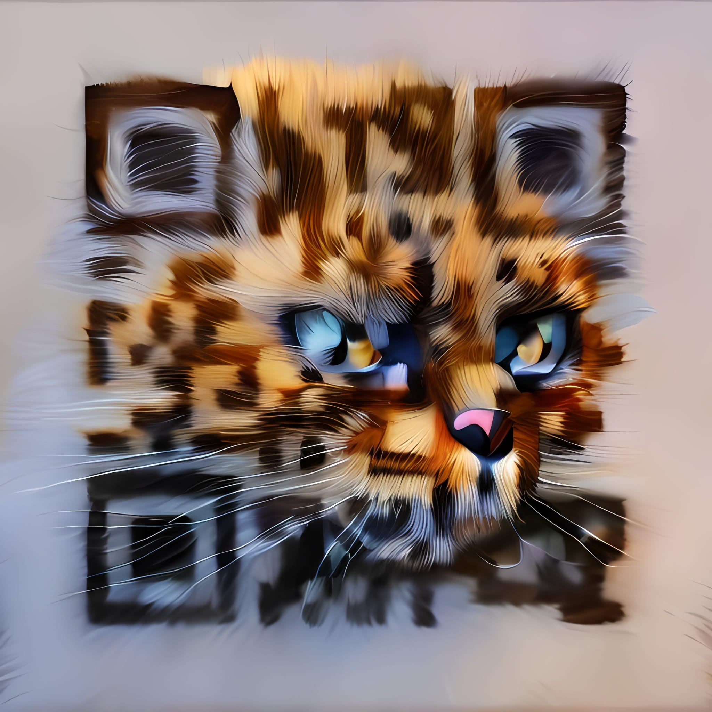

AI Generated QR codes
QRArt generated cat QR code...for all the cat lovers out there...
If your looking for a way to grab the attention of your users/consumers, then crafting custom QR codes to attract the interest of your target audience may just be the edge your looking for. We have all seen these pesky QR codes showing up on ads in magazines, websites, and on the television. Well, QRArt, has an interesting way of making them stand out and get noticed by using AI generated codes that capture the eye and can be made brand/site specific. Stop by QRArt, and see just what a custom QR code can do for your business!
Buy QRcat More infoLet the image guide them!

Whether you're the proprieter of an AirBnB or trying to attact attention to a tourist destination, adding a custom code to your advertising will peak the interest of your target audience, increasing the value of your ad.
Yes you are correct. This Qr code was genereted by yours truly, as a feeble attempt to garner the coveted purple hearts. As you can see, QR codes are just another way to fill your ENTIRE world with endless advertising, until Mark Z's Meta has turned us all into VR junkies staring into the void of advertising with headsets or implants.
Still not convinced? Point your camera at the above code to be shown the error of your ways!